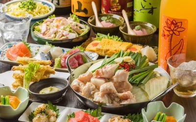

博多もつ鍋 よかさん房

和牛のもつの甘味と濃さが丁度いい！本場仕込みの醤油もつ鍋がおすすめ。 福岡、博多から空輸にて取り寄せた本場の醤油ダレに和牛の新鮮なもつのみを使用した本格的醤油もつ鍋がお店一番のお勧めです。 福岡を中心とした九州料理をメインに、もつ鍋、とり天、明太卵焼きなど、絶品メニューにてお客様をお待ちしております。
- 予約・問い合わせ
- 050-5590-6192
- 営業時間
-
17:00～23:30（L.O. 23:00）
定休日
日曜日（貸切時営業） - メニュー
-
飲み放題コース
飲み放題、3000円～4000円の飲み放題コース、4000円～5000円のコース
ドリンク
日本酒あり、焼酎あり、ワインあり、カクテルあり、焼酎にこだわる
料理
健康・美容メニューあり